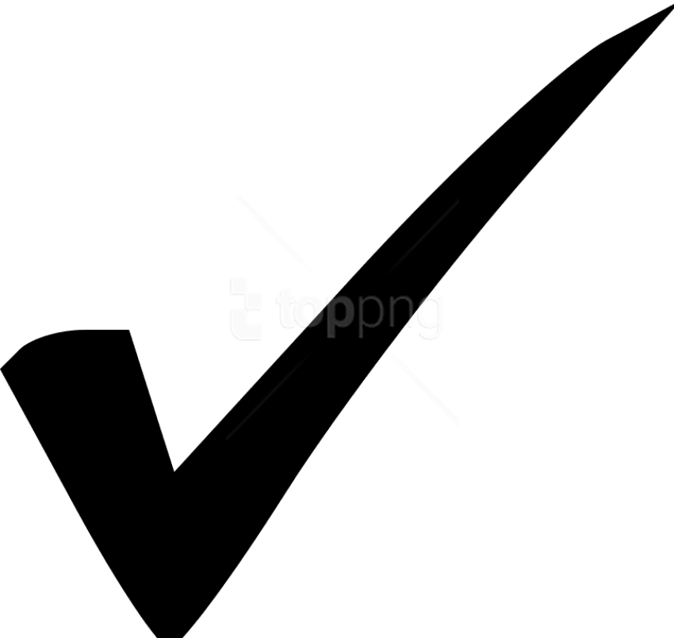

PROJECTS
2022.12
저의 포토폴리오를 사이트로 만든 사이트입니다.
저의 커리어 및 여러 프로젝트를 설명해놓은 사이트로 간단한 언어를 사용하여
만든 사이트입니다.
netlify를 활용하여 배포를 해봤다는것만으로 의미가 있지만 제가 이때까지
해온 것들을 정리하는데 의미가 있습니다.
웹의 기본언어인 html, css, 바닐라JS를 기준으로 jquery로 각 페이지를 import하여 연동하였습니다.

자신에 대한 설명, 프로젝트에 대한 설명, 자신의 커리어
html, css, js
netlify
2024.11
레이아웃 PHP언어를 React언어로 포팅한 페이지입니다.
고객이 원하는 법적인 문제와 회사를 홍보하는 차원에서 만들어졌으며 해당 페이지를 제작할때에도 법적인 용어들을 신경썻어야 되었습니다.
Docker, AWS(Amplify,EC2)를 활용하여 배포를 해봤다는것만으로 의미가 있지만 제가 이때까지
해온 것들을 정리하는데 의미가 있습니다.
웹은 React, Typescript, css, Next/js를 사용하여 각 페이지를 import하여 연동하였습니다.
또한 SEO(검색엔진최적화)에도 신경을 써서 만들었습니다.
각 컨텐츠에 대한 내용 및 각 사무소 홍보
React, MUI, Typescript, css
Docker, AWS
2024.08 ~ 2024.11
FingerPrint를 활용하여 고객의 기기를 파악하여 개인마다 고유한 아이디를 부여하여 개인마다 필요하다고 생각되는 서비스를 나열하여 페이지의 나열을 변경하게 개발하였습니다. 마이페이지를 만들어 각 사용자의
고객이 원하는 법적인 문제와 회사를 홍보하는 차원에서 만들어졌으며 해당 페이지를 제작할때에도 법적인 용어들을 신경썻어야 되었습니다.
Docker, AWS(Amplify,EC2)를 활용하여 배포를 해봤다는것만으로 의미가 있지만 제가 이때까지
해온 것들을 정리하는데 의미가 있습니다.
웹은 React, Typescript, css, Next.js, FingerPrint를 사용하여 각 페이지를 import하여 연동하였습니다.
또한 SEO(검색엔진최적화)에도 신경을 써서 만들었습니다.
각 컨텐츠에 대한 내용 및 각 사무소 홍보
React, MUI, Typescript, css
Docker, AWS
2024.11 ~ 2024.12
고객이 개인회생 자격이 있는지 아니면 개인파산인지 둘 다 아닌지에 따라 해당 페이지의 구성이 달라지는 사이트로 이동하게 설계했습니다.
또한 선택할 때 얼마나 진행되었는지 확인시켜주기 위해 상단에 진행바를 배치했습니다.
Docker, AWS(Amplify,EC2)를 활용하여 배포를 했습니다.
웹은 React, Typescript, css, Next.js, FingerPrint를 사용하여 각 페이지를 import하여 연동하였습니다.
또한 SEO(검색엔진최적화)에도 신경을 써서 만들었습니다.
각 컨텐츠에 대한 내용 및 각 사무소 홍보
React, MUI, Typescript, css
Docker, AWS